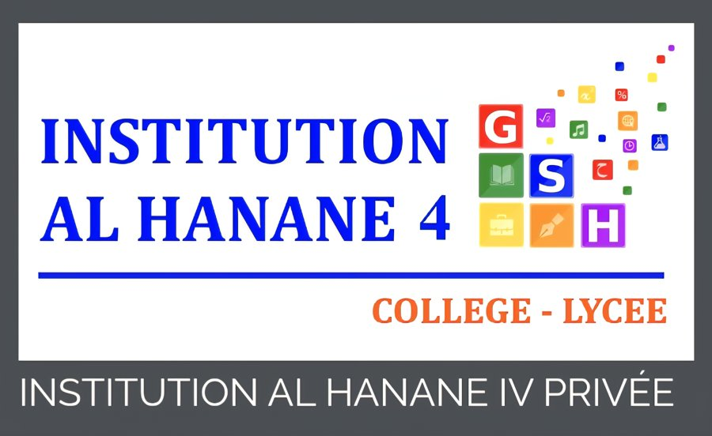

أهلا! أنا حنّون 🦉 رفيقك في الرحلة. أكمل المحطات بالترتيب، اجمع النجوم والشارات، وفي النهاية... شهادة ذهبية باسمك! 🎓
🌐 افتح موقع المراجعة الكامل
للدروس والموارد الإضافية: https://moraja3a.netlify.app/
مغامرة مراجعة شاملة في الاجتماعيات — الثالثة إعدادي

أتم(ت) بنجاح رحلة الجهوي الذهبية الشاملة لدروس التاريخ والجغرافيا والتربية على المواطنة
وفق ترتيب دروس المراجعة المعتمد
تقديرا لما أبان(ت) عنه من جدّ ومثابرة وتميّز في إتمام رحلة المراجعة الشاملة لدروس التاريخ والجغرافيا والتربية على المواطنة والمنهجيات، نتمنى له(ها) دوام التفوق والنجاح.
93 امتحانا جهويا حقيقيا في الاجتماعيات (2010-2022) من 12 جهة — اضغط على الجهة ثم اختر السنة
💡 الروابط تفتح ملفات PDF من موقع متمدرس. إذا لم يفتح ملف ما، استعمل زر "كل امتحانات الجهة" داخل البطاقة.